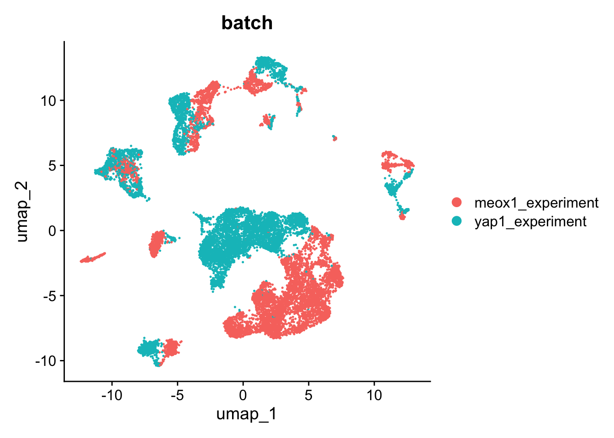
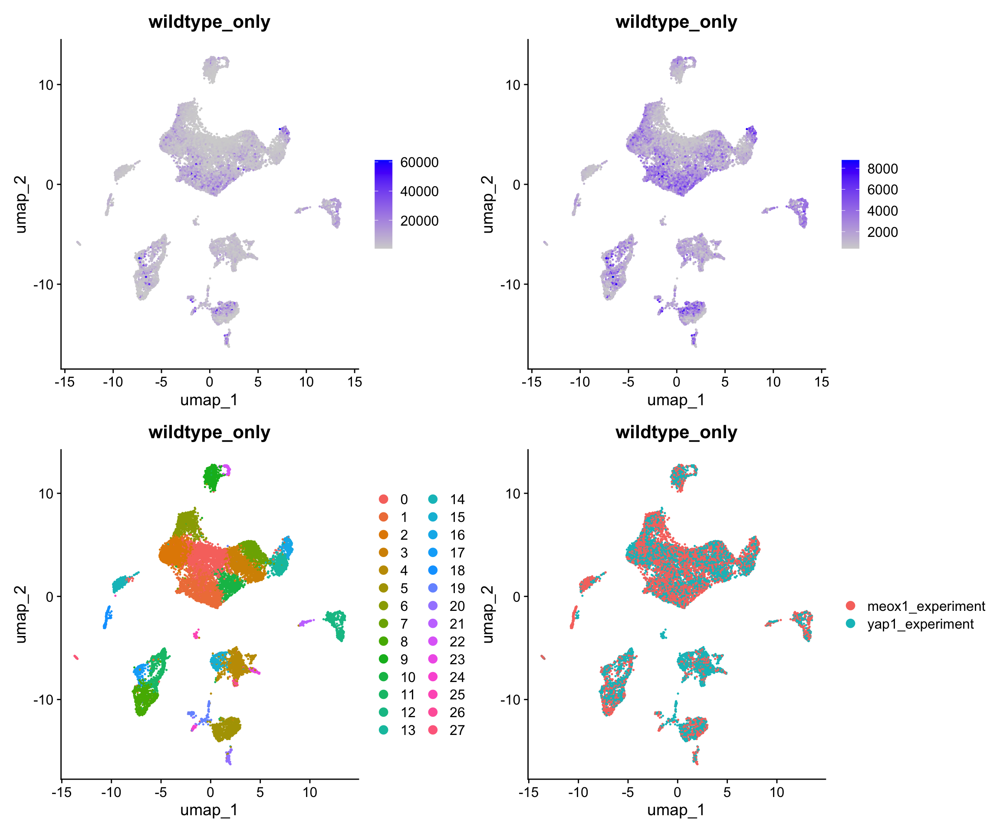
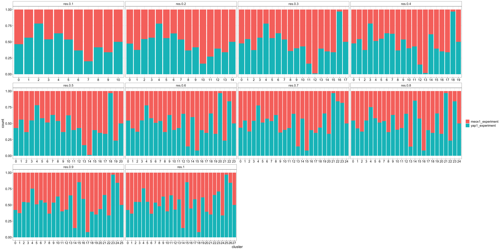
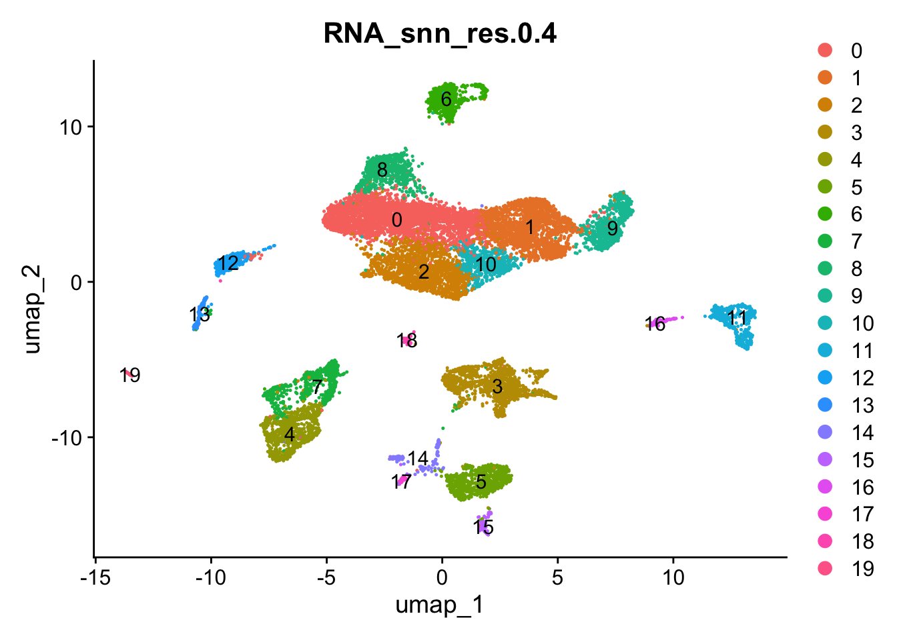
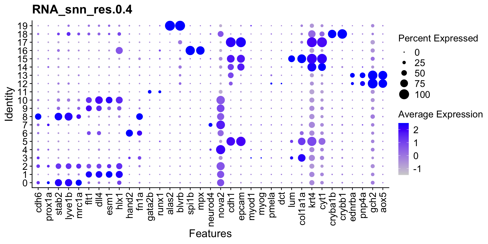
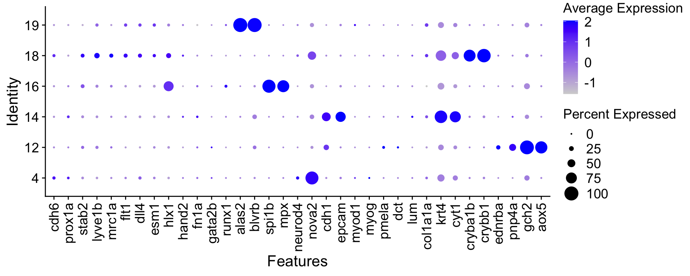

Combined WT only dataset: Make Level 01 (all cells) object
Michelle Meier
01. February 2026
Last updated: 2026-02-01
Checks: 7 0
Knit directory: yap1_meox1_paper/
This reproducible R Markdown analysis was created with workflowr (version 1.7.1). The Checks tab describes the reproducibility checks that were applied when the results were created. The Past versions tab lists the development history.
Great! Since the R Markdown file has been committed to the Git repository, you know the exact version of the code that produced these results.
Great job! The global environment was empty. Objects defined in the global environment can affect the analysis in your R Markdown file in unknown ways. For reproduciblity it’s best to always run the code in an empty environment.
The command set.seed(20260119) was run prior to running
the code in the R Markdown file. Setting a seed ensures that any results
that rely on randomness, e.g. subsampling or permutations, are
reproducible.
Great job! Recording the operating system, R version, and package versions is critical for reproducibility.
Nice! There were no cached chunks for this analysis, so you can be confident that you successfully produced the results during this run.
Great job! Using relative paths to the files within your workflowr project makes it easier to run your code on other machines.
Great! You are using Git for version control. Tracking code development and connecting the code version to the results is critical for reproducibility.
The results in this page were generated with repository version aebf02a. See the Past versions tab to see a history of the changes made to the R Markdown and HTML files.
Note that you need to be careful to ensure that all relevant files for
the analysis have been committed to Git prior to generating the results
(you can use wflow_publish or
wflow_git_commit). workflowr only checks the R Markdown
file, but you know if there are other scripts or data files that it
depends on. Below is the status of the Git repository when the results
were generated:
Ignored files:
Ignored: .DS_Store
Ignored: .Rhistory
Ignored: .Rproj.user/
Ignored: code/.DS_Store
Ignored: code/analysis/.DS_Store
Ignored: code/pre_processing/
Ignored: data/.DS_Store
Ignored: data/genesets/
Ignored: data/input/
Ignored: output/.DS_Store
Ignored: output/analysis/
Ignored: output/data/
Ignored: renv/library/
Ignored: renv/staging/
Note that any generated files, e.g. HTML, png, CSS, etc., are not included in this status report because it is ok for generated content to have uncommitted changes.
These are the previous versions of the repository in which changes were
made to the R Markdown
(analysis/pre_processing_combining_wildtypes_dataset_makeObject_Level01_annotation.Rmd)
and HTML
(docs/pre_processing_combining_wildtypes_dataset_makeObject_Level01_annotation.html)
files. If you’ve configured a remote Git repository (see
?wflow_git_remote), click on the hyperlinks in the table
below to view the files as they were in that past version.
| File | Version | Author | Date | Message |
|---|---|---|---|---|
| Rmd | aebf02a | Michelle Meier | 2026-02-01 | wflow_publish("analysis/pre_processing_combining_wildtypes_dataset_makeObject_Level01_annotation.Rmd") |
| html | 618d1cc | Michelle Meier | 2026-01-26 | Build site. |
| Rmd | 516694a | Michelle Meier | 2026-01-26 | wflow_publish(c("analysis/pre_processing_combining_wildtypes_dataset_makeObject_Level01_annotation.Rmd", |
| html | 8a28dd2 | Michelle Meier | 2026-01-26 | Build site. |
| Rmd | 65cb0b0 | Michelle Meier | 2026-01-26 | wflow_publish("analysis/pre_processing_combining_wildtypes_dataset_makeObject_Level01_annotation.Rmd") |
Introduction
Combine wildtype from yap1 and meox1 experiments.
Set-up
Load libraries
suppressPackageStartupMessages({
library(tidyverse)
library(here)
library(Seurat)
library(scDblFinder)
library(ggpubr)
library(clustree)
library(patchwork)
library(scater)
library(scran)
library(qs2)
library(scGate)
library(tricycle)
})Load data
From here ./pre_processing_D10025_yap1_dataset_makeObject_Level01.Rmd and here pre_processing_D10051_meox1_dataset_makeObject_Level01.Rmd. Note that each sample was processed there, e.g. QC was done on each sample separately.
Running with doublets removed:
yap1_wildtype <- qs_read(here("output/data/Samples/S20128/S20128_wildtype_Level_01.qs2"))
meox1_wildtype <- qs_read(here("output/data/Samples/S20201/S20201_wildtype_Level_01.qs2"))Add batch information.
yap1_wildtype$batch <- "yap1_experiment"
meox1_wildtype$batch <- "meox1_experiment"Read in mouse -> fish names
mouse_to_fish <- qs_read(here("data/genesets/geneMap_mmusculus_to_drerio.qs2"))Plotting themes
plot_sizing <- theme_bw()+ theme(axis.title = element_text(size = 16),
axis.text = element_text(size = 14, colour = "black"),
plot.title = element_text(size = 18),
legend.text = element_text(size = 14),
legend.title = element_blank())
plot_sizing_seurat <- theme(axis.title = element_text(size = 16),
axis.text = element_text(size = 14, colour = "black"),
plot.title = element_text(size = 18),
legend.text = element_text(size = 14))
rotate_x <- theme(axis.text.x = element_text(angle = 90, vjust = 0.5, hjust=1))
strip_fix <- theme(strip.background = element_rect(fill = "white"),
strip.text = element_text(size = 14))Re-filter meox1 wildtype
See here, but the original filtering we performed did not really get rid of all the low quality cells, so we need to introduce a second filtering step where we remove cells with nFeatures < 400 (nCounts threshold already implemented is 600, both of these thresholds are informed through the yap1 dataset).
meox1_wildtype <- meox1_wildtype[, !meox1_wildtype$nFeature_RNA < 400]Downsample yap1 batch
yap1 batch is much larger, let’s randomly downsample to match meox1 numbers
yap1_wildtype <- yap1_wildtype[, sample(colnames(yap1_wildtype), size = ncol(meox1_wildtype), replace=F)]Tricycle: Run cell cycle analysis
Run tricycle on each separately as the merged layers later make it difficult.
Make function.
run_tricycle_for_fish <- function(seurat, x_species_dictionary = mouse_to_fish){
#prepare
sce <- as.SingleCellExperiment(seurat, assay = "RNA") #convert to SCE
sub_sce <- sce[rownames(sce) %in% x_species_dictionary$drerio_zfin_id_symbol,] #subset to genes in dic
sub_x_species_dictionary <- x_species_dictionary %>% #subset dictionary to only include the genes that we kept
filter(., drerio_zfin_id_symbol %in% rownames(sub_sce)) %>%
distinct(drerio_zfin_id_symbol, .keep_all = TRUE) #needed for function
sub_x_species_dictionary <- sub_x_species_dictionary[match(rownames(sub_sce),
sub_x_species_dictionary$drerio_zfin_id_symbol),]
stopifnot(all(sub_x_species_dictionary$drerio_zfin_id_symbol == rownames(sub_sce))) #check
#run tricycle
sub_sce <- project_cycle_space(sub_sce,
gname = sub_x_species_dictionary$mmusculus_mgi_symbol,
species = "mouse",
gname.type = "SYMBOL")
#estimate position
sub_sce <- estimate_cycle_position(sub_sce)
#add back to seurat object
seurat$tricycle_position <- sub_sce$tricyclePosition
#add categorical cell cycle:
# https://github.com/lb15/multiciliation_cycle/blob/main/mcc_timecourse/mcc_timecourse_analysis.R#L619
seurat$tricycle_stage <- case_when(seurat$tricycle_position > pi/2 & seurat$tricycle_position < pi ~ "S",
seurat$tricycle_position >= pi & seurat$tricycle_position < pi*7/4 ~ "G2M",
TRUE ~ "G1/G0")
rm(sce,sub_sce, sub_x_species_dictionary); gc()
return(seurat)
}meox1_wildtype <- run_tricycle_for_fish(meox1_wildtype)No custom reference projection matrix provided. The ref learned from mouse Neuroshpere data will be used.The number of projection genes found in the new data is 428.yap1_wildtype <- run_tricycle_for_fish(yap1_wildtype)No custom reference projection matrix provided. The ref learned from mouse Neuroshpere data will be used.
The number of projection genes found in the new data is 428.We know from processing the datasets independently that tricycle works, so won’t run additional tests here.
Combine
Try to just combine
merged <- merge(yap1_wildtype,
y = meox1_wildtype,
project = "wildtype_only", merge.data = TRUE) Warning: Some cell names are duplicated across objects provided. Renaming to
enforce unique cell names.merged<- JoinLayers(merged) #seurat v5 thingsSingle-cell workflow:
Regress out %mito and batch
run_workflow_batch <- function(seurat){
seurat <- NormalizeData(seurat) %>% #should deal with basic library size differences
FindVariableFeatures() %>%
ScaleData(., vars.to.regress = c("percent.mt", "batch")) %>%
RunPCA() %>%
RunUMAP(., dims = 1:30) %>% #defaults
FindNeighbors(., dims = 1:30) %>%
FindClusters(., resolution = 0.8)
return(seurat)
}merged <- run_workflow_batch(merged)Normalizing layer: countsFinding variable features for layer countsRegressing out percent.mt, batchCentering and scaling data matrixWarning: Different features in new layer data than already exists for
scale.dataPC_ 1
Positive: cd9b, epcam, ppl, anxa1b, cldnb, s100v1, capn9, si:dkey-87o1.2, cldne, spint2
anxa1d, evpla, anxa3a, zgc:153284, si:ch211-125o16.4, pkp3a, anxa1c, tmsb1, f11r.1, si:ch211-157c3.4
si:dkey-19b23.12, krt4, gsnb, spaca4l, si:ch211-195b11.3, zgc:153665, agr1, cdh1, mid1ip1a, hrc
Negative: mcamb, ldb2a, spns2, srgn, npr1a, tmem108, prcp, flt4, stab1, adgra2
grb10a, si:dkey-49n23.1, sema4c, loxl3b, fam102aa, aqp1a.1, adam12, gab2, CABZ01044099.1, itga9
nrp2b, prdx1, si:ch211-250c4.4, mrc1a, igfbp1a, iqsec1b, plpp2a, galnt1, prex1, bmp6
PC_ 2
Positive: anxa1b, capn9, anxa1d, cldne, ppl, si:ch211-157c3.4, anxa1c, evpla, si:ch211-125o16.4, zgc:153665
si:dkey-87o1.2, agr1, si:ch211-195b11.3, anxa3a, hrc, evplb, stard14, tmem176l.4, capn2l, spaca4l
si:ch73-347e22.8, elovl7a, si:cabz01007794.1, mid1ip1a, s100w, zgc:193505, icn2, scel, si:dkey-19b23.12, dbnla
Negative: ctnna2, elavl3, aplp1, ncam1a, gpm6aa, brsk2b, ank2b, celf5a, nrxn1a, mapk10
nbeaa, si:dkey-178k16.1, adam22, tuba1c, kcnma1a, nrxn2a, epb41a, nkain2, thsd7aa, enox1
stx1b, pbx3b, celf3a, stmn1b, dscamb, nrxn3a, celf4, DOCK4, camta1b, tuba1a
PC_ 3
Positive: anxa1b, anxa1d, cldne, capn9, si:ch211-157c3.4, agr1, evpla, zgc:153665, si:ch211-125o16.4, si:cabz01007794.1
evplb, hrc, hsd17b12a, elovl7a, scel, tmem176l.4, zgc:100868, stx11b.1, stard14, si:ch73-347e22.8
dbnla, si:ch211-195b11.3, zgc:193505, anxa1c, s100w, eps8l1a, cldn23a, si:ch211-98n17.5, apodb, tmem45b
Negative: col4a6, col4a5, cldni, tp63, ecrg4b, col11a1a, col1a2, zgc:92380, lama5, col1a1a
egfl6, col1a1b, cldn1, ptprfa, fermt1, zgc:171775, itgb1b.1, zgc:101810, ptgs2a, col2a1b
padi2, igfbp5b, bcam, fat2, ociad2, myh9a, frem2a, postnb, zgc:86896, epcam
PC_ 4
Positive: slc2a11b, slc22a7a, bscl2l, aox5, tmem130, si:dkey-251i10.2, akr1b1.1, zgc:153031, syngr1a, uraha
pts, slc2a15a, plin6, slc2a15b, cax1, xdh, gch2, CABZ01058222.1, oacyl, CABZ01021592.1
rbp4l, pax7b, si:ch211-251b21.1, si:dkey-106n21.1, gpd1b, pah, paics, atic, aqp3a, txn
Negative: iqsec1b, ldb2a, ptprga, npr1a, spns2, macf1a, adgra2, grb10a, si:dkey-49n23.1, CABZ01044099.1
ebf3a, tmem108, foxp1b, diaph2, adam12, erfl3, mcamb, pcdh1b, plecb, itga9
rxraa, ralgapa2, gab2, plpp2a, flt4, stab1, prcp, CR848683.2, foxo1b, nfia
PC_ 5
Positive: slc2a11b, bscl2l, slc22a7a, aox5, si:dkey-251i10.2, CABZ01021592.1, tmem130, akr1b1.1, gch2, uraha
zgc:153031, syngr1a, slc2a15a, slc2a15b, pts, plin6, cax1, xdh, CABZ01058222.1, oacyl
gpd1b, pax7b, rbp4l, si:dkey-106n21.1, cx30.3, pah, si:ch211-251b21.1, zgc:110339, gstp1, paics
Negative: laptm5, lcp1, spi1b, coro1a, plek, ptpn6, mpx, npsn, ch25hl2, ptprc
si:ch1073-429i10.1, cd7al, fcer1gl, ncf1, CU499336.2, wasb, si:dkey-102g19.3, lect2l, si:dkey-185m8.2, si:dkey-27h10.2
alox5ap, cpa5, plxnc1, abcb9, dhrs9, fmnl1a, si:dkey-262k9.4, ponzr6, abcc13, cebpa Warning: The default method for RunUMAP has changed from calling Python UMAP via reticulate to the R-native UWOT using the cosine metric
To use Python UMAP via reticulate, set umap.method to 'umap-learn' and metric to 'correlation'
This message will be shown once per session12:43:01 UMAP embedding parameters a = 0.9922 b = 1.11212:43:01 Read 15634 rows and found 30 numeric columns12:43:01 Using Annoy for neighbor search, n_neighbors = 3012:43:01 Building Annoy index with metric = cosine, n_trees = 500% 10 20 30 40 50 60 70 80 90 100%[----|----|----|----|----|----|----|----|----|----|**************************************************|
12:43:02 Writing NN index file to temp file /var/folders/cx/d_5b9pls2cq2mv2m5jlps271lnn8nd/T//Rtmpgx4Bkb/file2d06381b657
12:43:02 Searching Annoy index using 1 thread, search_k = 3000
12:43:04 Annoy recall = 100%
12:43:04 Commencing smooth kNN distance calibration using 1 thread with target n_neighbors = 30
12:43:05 Initializing from normalized Laplacian + noise (using RSpectra)
12:43:05 Commencing optimization for 200 epochs, with 668422 positive edges
12:43:05 Using rng type: pcg
12:43:09 Optimization finished
Computing nearest neighbor graph
Computing SNNModularity Optimizer version 1.3.0 by Ludo Waltman and Nees Jan van Eck
Number of nodes: 15634
Number of edges: 576618
Running Louvain algorithm...
Maximum modularity in 10 random starts: 0.9071
Number of communities: 30
Elapsed time: 1 secondsDimPlot(merged, group.by = c("batch"), shuffle = T)
Clear batch effect.
Integration: Harmony
merged <- merge(yap1_wildtype,
y = meox1_wildtype,
project = "wildtype_only", merge.data = TRUE) #don't join layers, leave then in thereWarning: Some cell names are duplicated across objects provided. Renaming to
enforce unique cell names.#run basic workflow to get PCA
merged <- NormalizeData(merged) %>%
FindVariableFeatures() %>%
ScaleData(., split.by = "batch") %>% #scale for each batch separately
RunPCA()merged <- IntegrateLayers(object = merged, method = HarmonyIntegration, orig.reduction = "pca",
new.reduction = 'harmony', verbose = FALSE)Run workflow:
merged <- RunUMAP(merged, dims = 1:30, reduction = "harmony") %>% #defaults
FindNeighbors(., dims = 1:30, reduction = "harmony") %>%
FindClusters(., resolution = seq(0.1, 1, 0.1), reduction = "harmony")Warning: The following arguments are not used: reduction
Warning: The following arguments are not used: reductionModularity Optimizer version 1.3.0 by Ludo Waltman and Nees Jan van Eck
Number of nodes: 15634
Number of edges: 611470
Running Louvain algorithm...
Maximum modularity in 10 random starts: 0.9663
Number of communities: 11
Elapsed time: 1 seconds
Modularity Optimizer version 1.3.0 by Ludo Waltman and Nees Jan van Eck
Number of nodes: 15634
Number of edges: 611470
Running Louvain algorithm...
Maximum modularity in 10 random starts: 0.9500
Number of communities: 15
Elapsed time: 1 seconds
Modularity Optimizer version 1.3.0 by Ludo Waltman and Nees Jan van Eck
Number of nodes: 15634
Number of edges: 611470
Running Louvain algorithm...
Maximum modularity in 10 random starts: 0.9396
Number of communities: 18
Elapsed time: 1 seconds
Modularity Optimizer version 1.3.0 by Ludo Waltman and Nees Jan van Eck
Number of nodes: 15634
Number of edges: 611470
Running Louvain algorithm...
Maximum modularity in 10 random starts: 0.9298
Number of communities: 20
Elapsed time: 1 seconds
Modularity Optimizer version 1.3.0 by Ludo Waltman and Nees Jan van Eck
Number of nodes: 15634
Number of edges: 611470
Running Louvain algorithm...
Maximum modularity in 10 random starts: 0.9215
Number of communities: 21
Elapsed time: 1 seconds
Modularity Optimizer version 1.3.0 by Ludo Waltman and Nees Jan van Eck
Number of nodes: 15634
Number of edges: 611470
Running Louvain algorithm...
Maximum modularity in 10 random starts: 0.9145
Number of communities: 24
Elapsed time: 1 seconds
Modularity Optimizer version 1.3.0 by Ludo Waltman and Nees Jan van Eck
Number of nodes: 15634
Number of edges: 611470
Running Louvain algorithm...
Maximum modularity in 10 random starts: 0.9070
Number of communities: 25
Elapsed time: 1 seconds
Modularity Optimizer version 1.3.0 by Ludo Waltman and Nees Jan van Eck
Number of nodes: 15634
Number of edges: 611470
Running Louvain algorithm...
Maximum modularity in 10 random starts: 0.9006
Number of communities: 25
Elapsed time: 1 seconds
Modularity Optimizer version 1.3.0 by Ludo Waltman and Nees Jan van Eck
Number of nodes: 15634
Number of edges: 611470
Running Louvain algorithm...
Maximum modularity in 10 random starts: 0.8942
Number of communities: 26
Elapsed time: 1 seconds
Modularity Optimizer version 1.3.0 by Ludo Waltman and Nees Jan van Eck
Number of nodes: 15634
Number of edges: 611470
Running Louvain algorithm...
Maximum modularity in 10 random starts: 0.8881
Number of communities: 28
Elapsed time: 1 secondsPCA correlations
run_harmony_correlations <- function(seurat){
plot_list <- list()
meta <- seurat@meta.data %>%
mutate(., log10ncount = log10(nCount_RNA),
log10nfeat = log10(nFeature_RNA)) %>%
select(., log10ncount, log10nfeat) %>%
rownames_to_column("Barcode") %>%
full_join(., seurat@reductions$harmony@cell.embeddings %>% as.data.frame() %>% rownames_to_column("Barcode") %>% select(., Barcode, harmony_1, harmony_2, harmony_3))
#ncount
plot_list[[1]] <- ggscatter(meta, x = "harmony_1", y = "log10ncount",
add = "reg.line",
conf.int = TRUE,
add.params = list(color = "red4",
fill = "lightgray")) +
plot_sizing + ylab("log10(nCount)") + xlab("harmony_1") +
stat_cor(method = "pearson", size = 5, colour = "red4") +
ggtitle(sprintf("Harmony1 vs library size, %s", seurat@project.name))
#nfeat
plot_list[[2]] <- ggscatter(meta, x = "harmony_2", y = "log10ncount",
add = "reg.line",
conf.int = TRUE,
add.params = list(color = "red4",
fill = "lightgray")) +
plot_sizing + ylab("log10(nCount)") + xlab("harmony_2") +
stat_cor(method = "pearson", size = 5, colour = "red4") +
ggtitle(sprintf("Harmony2 vs library size, %s", seurat@project.name))
#mito
plot_list[[3]] <- ggscatter(meta, x = "harmony_3", y = "log10ncount",
add = "reg.line",
conf.int = TRUE,
add.params = list(color = "red4",
fill = "lightgray")) +
plot_sizing + ylab("log10(nCount)") + xlab("harmony_3") +
stat_cor(method = "pearson", size = 5, colour = "red4") +
ggtitle(sprintf("Harmony3 vs library size, %s", seurat@project.name))
return(plot_list)
}wrap_plots(run_harmony_correlations(merged), ncol = 3)Joining with `by = join_by(Barcode)`
| Version | Author | Date |
|---|---|---|
| 618d1cc | Michelle Meier | 2026-01-26 |
UMAP overview
plot_umap_dataset <- function(seurat){
plot_list <- list()
plot_list[[1]] <- FeaturePlot(seurat, features = c("nCount_RNA")) + ggtitle(seurat@project.name)
plot_list[[2]] <- FeaturePlot(seurat, features = c("nFeature_RNA")) + ggtitle(seurat@project.name)
plot_list[[3]] <- DimPlot(seurat, group.by = c("seurat_clusters")) + ggtitle(seurat@project.name)
plot_list[[4]] <- DimPlot(seurat, group.by = c("batch"), shuffle = T) + ggtitle(seurat@project.name)
return(plot_list)
}wrap_plots(plot_umap_dataset(merged), ncol = 2)
Low quality clusters
plot_list <- list()
plot_list[[1]] <- merged@meta.data %>%
ggplot(., aes(y = log10(nCount_RNA), x = seurat_clusters, fill=seurat_clusters)) +
geom_boxplot() +
plot_sizing + theme(legend.position = "none")
plot_list[[2]] <- merged@meta.data %>%
ggplot(., aes(y = percent.mt, x = seurat_clusters, fill=seurat_clusters)) +
geom_boxplot() +
plot_sizing + theme(legend.position = "none")
wrap_plots(unlist(plot_list, recursive = F)) + plot_layout(axis_titles = "collect") 
| Version | Author | Date |
|---|---|---|
| 618d1cc | Michelle Meier | 2026-01-26 |
Clustree
clustree(merged)
| Version | Author | Date |
|---|---|---|
| 618d1cc | Michelle Meier | 2026-01-26 |
Stacked barplot for different resolutions capturing genotype split.
merged@meta.data %>%
select(., batch, starts_with("RNA")) %>%
pivot_longer(., cols = starts_with("RNA"), values_to = "cluster", names_to = "resolution") %>%
mutate(., resolution = gsub("RNA_snn_", "", resolution)) %>%
group_by(resolution, cluster, batch) %>%
summarise(., count = n()) %>%
ggplot(., aes(x= cluster, y = count, fill= batch)) +
geom_bar(position = "fill", stat = "identity") +
plot_sizing +
facet_wrap(~resolution, scales = "free_x", nrow =3) +
strip_fix `summarise()` has grouped output by 'resolution', 'cluster'. You can override
using the `.groups` argument.
scGate: Find endothelial subset
endothelial_gating_model <- gating_model(name = "endothelial", signature = c("kdrl+",
"col1a1a-",
"epcam-",
"gata2b-",
"myod1-",
"gch2-",
"aox5-"))
merged <- scGate(data = merged,
model = endothelial_gating_model,
output.col.name = "is_endothlial")Warning: Different features in new layer data than already exists for
scale.data
### Detected a total of 11120 pure 'Target' cells (71.13% of total)pure_colours <- c("grey", "green3"); names(pure_colours) <- c("Impure", "Pure")
DimPlot(merged, group.by = "is_endothlial", cols = pure_colours)
| Version | Author | Date |
|---|---|---|
| 618d1cc | Michelle Meier | 2026-01-26 |
Make purity plots for res 0.4:
merged@meta.data %>%
mutate(.,RNA_snn_res.0.4 = as.factor(RNA_snn_res.0.4)) %>%
group_by(., RNA_snn_res.0.4, is_endothlial,.drop = F) %>%
summarise(., count = n()) %>%
group_by(RNA_snn_res.0.4) %>%
mutate(., RNA_snn_res.0.4_cluster_purity = count[is_endothlial == "Pure"]/sum(count)) %>%
summarise(RNA_snn_res.0.4_cluster_purity) %>% distinct() %>%
ggplot(., aes(x= reorder(RNA_snn_res.0.4, -RNA_snn_res.0.4_cluster_purity), y = RNA_snn_res.0.4_cluster_purity))+
geom_bar(stat = "identity") + plot_sizing +
ylab("Endo Purity per cluster") + xlab("cluster") `summarise()` has grouped output by 'RNA_snn_res.0.4'. You can override using
the `.groups` argument.Warning: Returning more (or less) than 1 row per `summarise()` group was deprecated in
dplyr 1.1.0.
ℹ Please use `reframe()` instead.
ℹ When switching from `summarise()` to `reframe()`, remember that `reframe()`
always returns an ungrouped data frame and adjust accordingly.
Call `lifecycle::last_lifecycle_warnings()` to see where this warning was
generated.`summarise()` has grouped output by 'RNA_snn_res.0.4'. You can override using
the `.groups` argument.
DotPlot
Use some known marker genes for celltypes to double check scGate annotation.
dotplot.level.01 <- c(
"cdh6",
"prox1a",
"stab2",
"lyve1b",
"mrc1a",
"flt1",
"dll4",
"esm1",
"hlx1",
"hand2",
"fn1a",
"gata2b",
"runx1",
"alas2",
"blvrb",
"spi1b",
"mpx",
"neurod4",
"nova2",
"cdh1",
"epcam",
"myod1",
"myog",
"pmela",
"dct",
"lum",
"col1a1a",
"krt4",
"cyt1",
"cryba1b",
"crybb1",
"ednrba",
"pnp4a",
"gch2",
"aox5")Make dotplot function:
run_dotplot <- function(seurat, genes, group){
DotPlot(seurat, features = genes, group.by = group) + ggtitle(group) +plot_sizing_seurat + rotate_x
}Make dotplots for all clusters
DimPlot(merged, group.by = "RNA_snn_res.0.4", label = T)
run_dotplot(merged, dotplot.level.01, group = "RNA_snn_res.0.4")
Make dotplot for clusters that have mid-range purity.run_dotplot_mid_purity <- function(seurat, genes, limits){
clusters <- seurat@meta.data %>%
mutate(.,RNA_snn_res.0.4 = as.factor(RNA_snn_res.0.4)) %>%
group_by(., RNA_snn_res.0.4, is_endothlial,.drop = F) %>%
summarise(., count = n()) %>%
group_by(RNA_snn_res.0.4) %>%
mutate(., RNA_snn_res.0.4_cluster_purity = count[is_endothlial == "Pure"]/sum(count)) %>%
summarise(RNA_snn_res.0.4_cluster_purity) %>% distinct() %>%
filter(., RNA_snn_res.0.4_cluster_purity > limits[1] & RNA_snn_res.0.4_cluster_purity < limits[2]) %>%
pull(RNA_snn_res.0.4) %>% unique()
seurat <- SetIdent(seurat, value = "RNA_snn_res.0.4")
DotPlot(seurat, features = genes, group.by = "RNA_snn_res.0.4", idents = clusters) +plot_sizing_seurat + rotate_x
}run_dotplot_mid_purity(merged, limits = c(0.2, 0.95), genes = dotplot.level.01)`summarise()` has grouped output by 'RNA_snn_res.0.4'. You can override using
the `.groups` argument.Warning: Returning more (or less) than 1 row per `summarise()` group was deprecated in
dplyr 1.1.0.
ℹ Please use `reframe()` instead.
ℹ When switching from `summarise()` to `reframe()`, remember that `reframe()`
always returns an ungrouped data frame and adjust accordingly.
Call `lifecycle::last_lifecycle_warnings()` to see where this warning was
generated.`summarise()` has grouped output by 'RNA_snn_res.0.4'. You can override using
the `.groups` argument.
They all express other markers as well.
Export
file_name <- here('output/data/Datsets/merged_wildtypes/merged_wildtypes_Level_01_annotated.qs2')
qs_save(merged, file_name)
sessionInfo()R version 4.5.0 (2025-04-11)
Platform: aarch64-apple-darwin20
Running under: macOS Sequoia 15.7.3
Matrix products: default
BLAS: /Library/Frameworks/R.framework/Versions/4.5-arm64/Resources/lib/libRblas.0.dylib
LAPACK: /Library/Frameworks/R.framework/Versions/4.5-arm64/Resources/lib/libRlapack.dylib; LAPACK version 3.12.1
locale:
[1] en_US.UTF-8/en_US.UTF-8/en_US.UTF-8/C/en_US.UTF-8/en_US.UTF-8
time zone: Australia/Melbourne
tzcode source: internal
attached base packages:
[1] stats4 stats graphics grDevices datasets utils methods
[8] base
other attached packages:
[1] future_1.69.0 tricycle_1.18.0
[3] scGate_1.7.2 qs2_0.1.7
[5] scran_1.38.0 scater_1.38.0
[7] scuttle_1.20.0 patchwork_1.3.2
[9] clustree_0.5.1 ggraph_2.2.2
[11] ggpubr_0.6.2 scDblFinder_1.24.0
[13] SingleCellExperiment_1.32.0 SummarizedExperiment_1.40.0
[15] Biobase_2.70.0 GenomicRanges_1.62.1
[17] Seqinfo_1.0.0 IRanges_2.44.0
[19] S4Vectors_0.48.0 BiocGenerics_0.56.0
[21] generics_0.1.4 MatrixGenerics_1.22.0
[23] matrixStats_1.5.0 Seurat_5.4.0
[25] SeuratObject_5.3.0 sp_2.2-0
[27] here_1.0.2 lubridate_1.9.4
[29] forcats_1.0.1 stringr_1.5.1
[31] dplyr_1.1.4 purrr_1.2.1
[33] readr_2.1.6 tidyr_1.3.2
[35] tibble_3.3.1 ggplot2_4.0.1
[37] tidyverse_2.0.0 workflowr_1.7.1
loaded via a namespace (and not attached):
[1] fs_1.6.6 spatstat.sparse_3.1-0 bitops_1.0-9
[4] httr_1.4.7 RColorBrewer_1.1-3 tools_4.5.0
[7] sctransform_0.4.3 backports_1.5.0 R6_2.6.1
[10] mgcv_1.9-1 lazyeval_0.2.2 uwot_0.2.4
[13] withr_3.0.2 gridExtra_2.3 progressr_0.18.0
[16] cli_3.6.5 spatstat.explore_3.7-0 fastDummies_1.7.5
[19] labeling_0.4.3 sass_0.4.10 mvtnorm_1.3-3
[22] S7_0.2.1 spatstat.data_3.1-9 ggridges_0.5.7
[25] pbapply_1.7-4 Rsamtools_2.26.0 harmony_1.2.4
[28] parallelly_1.46.1 limma_3.66.0 RSQLite_2.4.5
[31] rstudioapi_0.17.1 circular_0.5-2 BiocIO_1.20.0
[34] ica_1.0-3 spatstat.random_3.4-4 car_3.1-3
[37] Matrix_1.7-3 ggbeeswarm_0.7.3 abind_1.4-8
[40] lifecycle_1.0.4 whisker_0.4.1 yaml_2.3.10
[43] edgeR_4.8.2 carData_3.0-5 SparseArray_1.10.8
[46] Rtsne_0.17 blob_1.3.0 grid_4.5.0
[49] promises_1.5.0 dqrng_0.4.1 crayon_1.5.3
[52] miniUI_0.1.2 lattice_0.22-6 beachmat_2.26.0
[55] cowplot_1.2.0 cigarillo_1.0.0 KEGGREST_1.50.0
[58] pillar_1.11.1 knitr_1.50 metapod_1.18.0
[61] boot_1.3-31 rjson_0.2.23 xgboost_3.1.3.1
[64] future.apply_1.20.1 codetools_0.2-20 glue_1.8.0
[67] getPass_0.2-4 spatstat.univar_3.1-6 data.table_1.18.0
[70] vctrs_0.6.5 png_0.1-8 spam_2.11-3
[73] gtable_0.3.6 cachem_1.1.0 xfun_0.52
[76] S4Arrays_1.10.1 mime_0.13 tidygraph_1.3.1
[79] survival_3.8-3 statmod_1.5.1 bluster_1.20.0
[82] fitdistrplus_1.2-5 ROCR_1.0-11 nlme_3.1-168
[85] bit64_4.6.0-1 RcppAnnoy_0.0.23 GenomeInfoDb_1.46.2
[88] rprojroot_2.1.1 bslib_0.9.0 irlba_2.3.5.1
[91] vipor_0.4.7 KernSmooth_2.23-26 otel_0.2.0
[94] DBI_1.2.3 colorspace_2.1-2 UCell_2.14.0
[97] tidyselect_1.2.1 processx_3.8.6 bit_4.6.0
[100] compiler_4.5.0 curl_6.2.2 git2r_0.36.2
[103] BiocNeighbors_2.4.0 DelayedArray_0.36.0 plotly_4.11.0
[106] stringfish_0.18.0 rtracklayer_1.70.1 checkmate_2.3.3
[109] scales_1.4.0 lmtest_0.9-40 callr_3.7.6
[112] digest_0.6.37 goftest_1.2-3 spatstat.utils_3.2-1
[115] rmarkdown_2.29 RhpcBLASctl_0.23-42 XVector_0.50.0
[118] htmltools_0.5.8.1 pkgconfig_2.0.3 fastmap_1.2.0
[121] rlang_1.1.6 htmlwidgets_1.6.4 UCSC.utils_1.6.1
[124] shiny_1.12.1 farver_2.1.2 jquerylib_0.1.4
[127] zoo_1.8-15 jsonlite_2.0.0 BiocParallel_1.44.0
[130] BiocSingular_1.26.1 RCurl_1.98-1.17 magrittr_2.0.3
[133] Formula_1.2-5 dotCall64_1.2 Rcpp_1.0.14
[136] ggnewscale_0.5.2 viridis_0.6.5 reticulate_1.44.1
[139] stringi_1.8.7 MASS_7.3-65 plyr_1.8.9
[142] parallel_4.5.0 listenv_0.10.0 ggrepel_0.9.6
[145] deldir_2.0-4 graphlayouts_1.2.2 Biostrings_2.78.0
[148] splines_4.5.0 tensor_1.5.1 hms_1.1.4
[151] locfit_1.5-9.12 ps_1.9.1 igraph_2.2.1
[154] spatstat.geom_3.7-0 ggsignif_0.6.4 RcppHNSW_0.6.0
[157] reshape2_1.4.5 ScaledMatrix_1.18.0 XML_3.99-0.20
[160] evaluate_1.0.3 RcppParallel_5.1.11-1 renv_1.1.4
[163] BiocManager_1.30.27 tweenr_2.0.3 tzdb_0.5.0
[166] httpuv_1.6.16 RANN_2.6.2 polyclip_1.10-7
[169] scattermore_1.2 ggforce_0.5.0 rsvd_1.0.5
[172] broom_1.0.11 xtable_1.8-4 restfulr_0.0.16
[175] RSpectra_0.16-2 rstatix_0.7.3 later_1.4.2
[178] viridisLite_0.4.2 AnnotationDbi_1.72.0 memoise_2.0.1
[181] beeswarm_0.4.0 GenomicAlignments_1.46.0 cluster_2.1.8.1
[184] timechange_0.3.0 globals_0.18.0